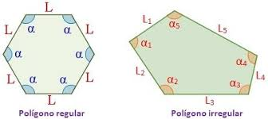
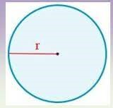

El prímetro es la suma de las longitudes de los lados de cualquier figura geométrica plana. Se trata de un concepto clave para las matemáticas, que junto con el área, que resulta cercano, es necesario dominar para transitar hacia matemáticas más avanzadas como el álgebra y la trigonometría, ya que perminten la construcción de polígonos.
>
En prácticamente cualquier polígono, solo debes de sumar las longitudes de todos sus lados, esto para obtener el perímetro de la figura deseada.
 Pero el caso de un círculo es diferente, para empezar, en un círculo no tiene perímetro sino que tiene una circunferencia, la cual se calcula un poco diferente a cualquier otra figura geométrica. A diferencia de otra figura, el círculo requiere de otra fórmula, esta es la siguiente:
P= 2 * π * r
Donde:
π = Pi (3.1416)
r = Radio de círculo

Vídeos para reforzar lo aprendido
Cuestionario para reforzar lo aprendido